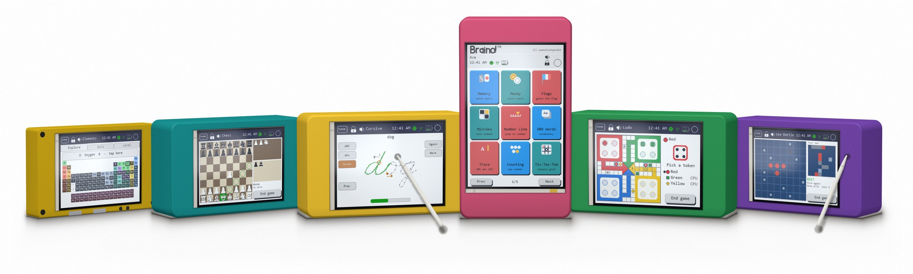
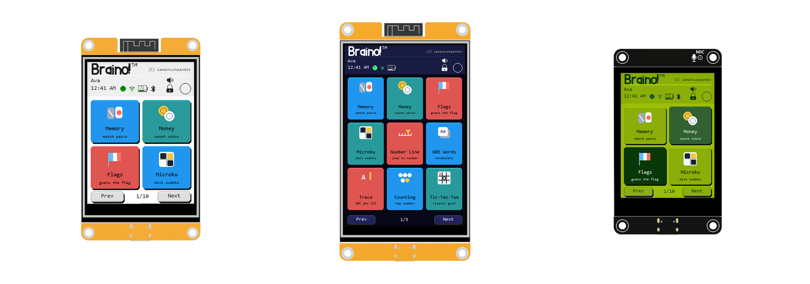
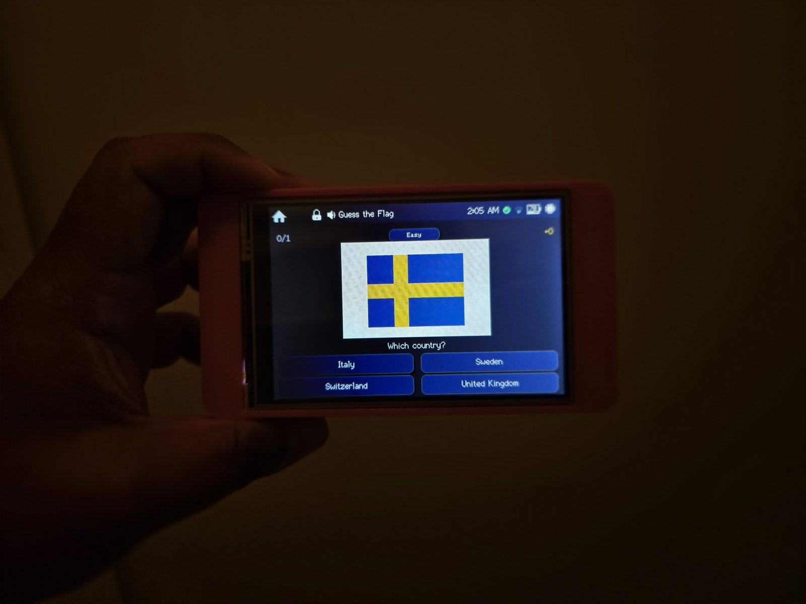
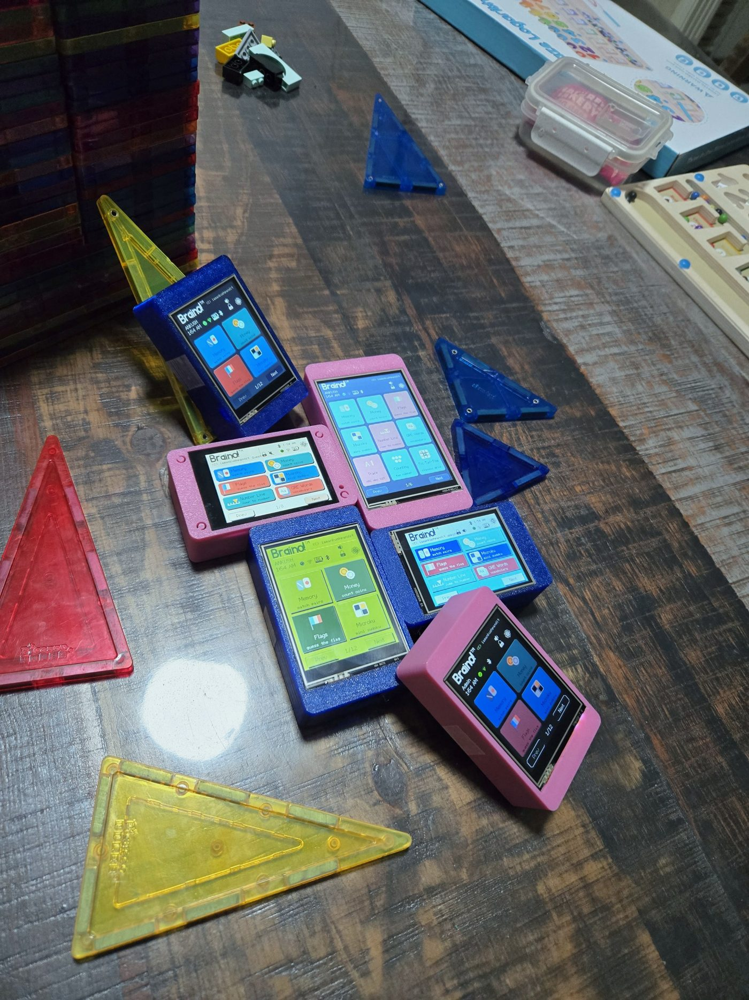
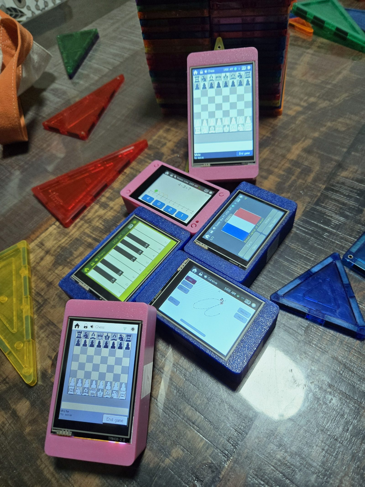
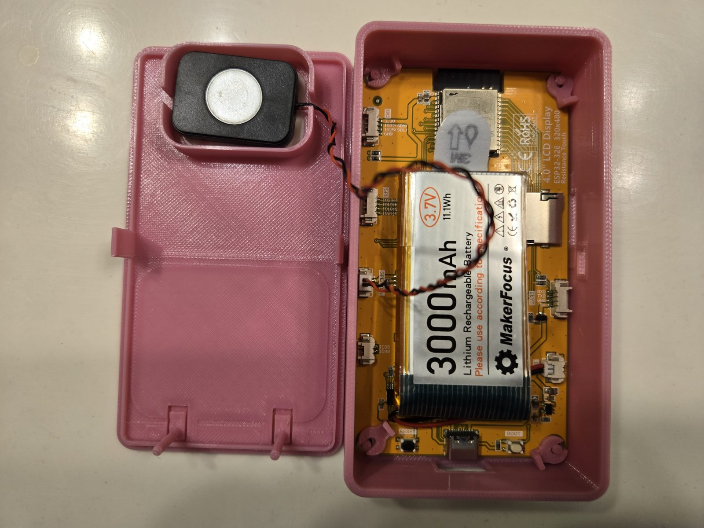
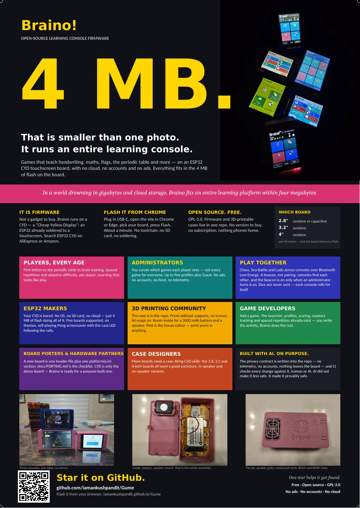

Firmware, not a gadget. Nothing here is for sale.
That is smaller than one photo.
It runs an entire learning console.
Braino! is open-source firmware for the ESP32 CYD, the Cheap Yellow Display: an ESP32 already soldered to a touchscreen. {{GAME_COUNT}} games — handwriting, flags, maths, the periodic table, chess across the room. No ads, no accounts, no cloud.
You buy the board from whoever you like — we sell nothing and take nothing — and flash this onto it for free. The whole thing is GPL-3.0: read it, change it, build your own from it.
2.8, 3.2 and 4 inch, shown at their true relative sizes — the case footprints are measured from the printable meshes in this repository, so the 4-inch really is a third wider than the 2.8-inch. Every screen is the firmware's own.

This is not an advertisement. None of these is a product and none of them is for sale — not by us and not by anyone. They are ordinary ESP32 CYD boards anybody can buy for a few dollars, in cases anybody can print, running free software. The picture is here to show you what you would end up with, not to sell you one.
Mock-ups, not photographs: they are redrawn on a PC from the exact rectangles, fonts and colours in the C++ source, because the board does not wire the panel's MISO line and a true screenshot is not possible. The flag artwork is the real pixel data the device draws from.
Nothing to buy from us. Search “ESP32 CYD” on AliExpress or Amazon, plug the board into USB, and flash it from this page in about a minute.
One firmware. You pick the board when you flash.
It runs on the bare board exactly as it is — no case, no battery, nothing to print. The case is there if you want one.
Three boards, three of the nine themes. Board artwork by LCDWIKI; the screens are Braino's own.

First letters to the periodic table to brain training. Flags, US states and elements use spaced repetition, so a missed item comes back sooner and a mastered one fades into the background. Difficulty adapts as a player improves.
Games, not lessons. That is the whole trick.

Up to five player profiles plus a Guest that saves nothing. The administrator chooses which games each player sees, so one console can be a different console for every player. Settings are readable by anyone and changeable only by the administrator, behind a PIN.
No ads. No accounts. No feed. Nothing to scroll.

Chess, Sea Battle and Backgammon for two, Ludo for four, across consoles in the same room over Bluetooth Low Energy. It is a beacon, not pairing: no phone in the middle, no internet. The beacon is off by default, and only an administrator turns it on.
Dice are never sent. Every console rolls for itself, and checks every move it hears against its own board.

Prints without supports, no screws, the lid snaps on. Room inside for a 3000 mAh battery and a small speaker. The lid carries the speaker grille, the embossed mark and slots that reach the BOOT and RESET buttons.
Pink is the house colour. Print yours in anything.

Web Serial works in desktop Chrome, Edge and Opera; Firefox and Safari cannot flash from a page, and the terminal route works everywhere. Flashing replaces the firmware and leaves your players, scores and touch calibration alone — those live in the ESP32's NVS partition, and only Erase device throws them away. A board that is not on this list is not supported: a mismatched image gives a blank or wrongly coloured screen rather than an error. To add one, see docs/PORTING.md. You may also need a CH340 or CP210x USB-serial driver, if your operating system does not already have one.
Every build here is also a plain set of .bin files. With
esptool installed, this is
the command for the board and version selected above:
Braino! v{{VERSION}} · flash {{FLASH}} · RAM {{RAM}}
All {{GAME_COUNT}} of them, and any one can be hidden per player. This list is generated from the firmware's own registry, so it cannot drift from what is actually on the board.
Every screen has a mock-up, redrawn on a PC from the rectangles, fonts and colours in the source. They live in the README gallery rather than here.
Which board, how to install, first run, the games, chess and Ludo across consoles, the poke, and what the case looks like inside.
The first time somebody outside this project put Braino on real hardware and showed it working. That is worth more than any amount of documentation, and we are grateful for it. @Hacktuber
Nothing from YouTube loads until you press play. When you do, the player comes from youtube-nocookie.com. The one-minute video at the top of the page is served from this site.

The A2 poster is print-ready, with bleed and crop marks, and the QR code goes straight to the repository. Pin it on a wall, a classroom door or a makerspace noticeboard.
Optional, and used for the clock: an NTP server, plus one lookup to ip-api.com to guess the time zone on first connect. A daily check asks whether a newer firmware exists, and that request says nothing whatsoever about this device. Skip Wi-Fi entirely and nothing else changes.
Off by default. Switched on, it advertises a device name and two bytes of the factory Bluetooth MAC — and the device shows you a hex dump of the exact bytes on air, read back from the same buffer that was handed to the radio.
A second opt-in on top of that, also off by default. The beacon then additionally carries which game is open and the best score for it. No player name, no profile name, nothing profile-scoped: a peer is four hex digits of its own hardware id and nothing else.
Each console advertises its latest move: a session number, a move number and two small numbers saying what was played. Dice are never sent. It is a broadcast — anyone in range hears the moves — and every move received is checked against the receiver's own board before it is played.
Rides the same beacon and adds no new kind of data: for a few seconds it carries the id being poked, which that console already broadcasts as its own name, and a counter. Every Braino in range hears it; only the one addressed reacts.
Stay on the console that stored them. The administrator can label a tag they recognise so a poke says who rather than what; the beacon never reads that label, so what goes on air is identical whether every peer is named or none is.
Live in the ESP32's own flash and never leave it. There is no account to make, nothing to sign in to, and no way for anybody here to see how a player plays.
Talks to your board over Web Serial, inside your browser; nothing about your device is sent anywhere. The firmware comes from GitHub Pages, and the Install button's code (esp-web-tools) from the unpkg CDN. Those two are the only requests this page makes on load — no analytics, no cookies, no fonts from anybody else.
The launcher, profiles, scoring, mastery tracking and spaced repetition already exist. You write the activity; Braino does the rest. Not sure yet? Open a discussion and think it through in the open.
Port a board.A new board is one header under include/boards and one section in platformio.ini. Nothing under src names a GPIO. PORTING.md is the checklist, and it starts by asking whether the board can run this at all.
Design a case.The 3.2-inch and 4-inch boards would love a good enclosure, in speaker and no-speaker variants. Print notes and fastener sizes are as valuable as the mesh.
The privacy contract — no telemetry, no accounts, nothing leaves the board — is written into the repository, and CI checks every change against it, whoever or whatever wrote it. Bug reports and code critique are especially welcome: open an issue, and if you can, say how you would fix it.
An issue is the best place for anything about the firmware — it is public, it is searchable, and the next person with the same board finds the answer. For everything else, any of these reaches a person.